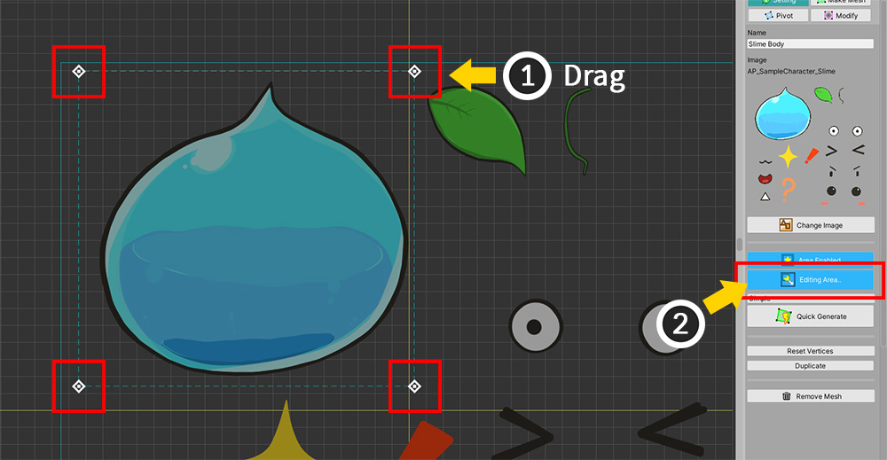
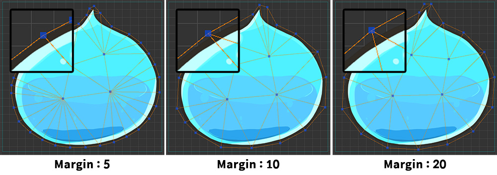
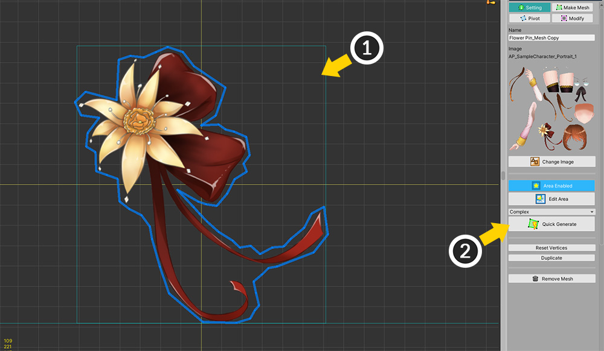

AnyPortrait > Manual > Generating Meshes Automatically
Generating Meshes Automatically
1.3.0
It's always a good story to automatically do the job for you.
In particular, if “Mesh creation”, which is the most time-consuming task in AnyPortrait, is automated, the work efficiency of users will be greatly improved.
This page introduces the automatic mesh creation function.
Note
From v1.3.0, a new automatic mesh generation function is applied, and the previous automatic mesh generation function added in v1.1.0 has been removed.
Using Quick Generate

Here's a simple way to create meshes automatically.
(1) Select the Mesh.
(2) Select the Setting tab.
(3) There are UIs for automatically generating meshes.

To create a mesh, you need to set up the image area first.
(1) If it is Area Disabled, press the button to change it to Area Enabled.
(2) Press the Edit Area button.
(3) When the area edit mode is turned on, points to control the image area appear.

(1) Drag the 4 points to set the size appropriately.
If the unnecessary image is contained within the area, you can edit the mesh later.
Set the area so that it wraps enough around the image.
(2) If you have set both the size and position of the area, you can exit the area edit mode by clicking the Editing Area.. button again.
However, you must keep the Area Enabled status.

Choose an option to generate the mesh.
- The Simple, Moderate, Complex options determine how many vertices are created in the mesh.
- Selecting Advanced Settings switches to the detailed setting screen.
First, let's select the Simple option.

(1) Click the Quick Generate button.
(2) You can see that the mesh has been created.

(1) If you select the Make Mesh tab, (2) you can see how the vertices were created.

Let's create a mesh with the Moderate option.
(1) Select the Setting tab again.
(2) Select the Moderate option.
(3) Click the Quick Generate button.
(4) A message appears asking if you want to delete the existing vertices. If you click the Replace button, the existing vertices are deleted and a new mesh is created.
You can see the mesh is generated by recognizing the image more precisely than using the Simple option.

Depending on the options, vertices are generated more precisely.
Simple, Moderate, Complex, in that order, the mesh is generated more precisely.
As more vertices are created, the mesh will be created to fit the image, but there is a possibility that performance will be degraded.
Creating a mesh using detailed settings

(1) Select the Make Mesh tab.
(2) Select the Auto tab.
(3) Detailed settings for automatic mesh generation are displayed. It looks similar to Quick Generate, but it can be set in more detail.
(4) Options for the image area. You can directly enter a value for the area.
(5) These are the settings for mesh creation. There are Density, Margin, and Padding.
(6) Clicking the Default button initializes the automatic mesh generation option.
(7) Click the Generate Mesh button to generate the mesh according to the settings.
The process of generating the mesh is the same as for Quick Generate.
Check out how the mesh is created according to the settings in the description below.

The image above shows the difference in mesh generation results according to Density.
As the density value increases, more vertices are created.

Margin is an option for how far outward from the edge of the image to create vertices of outlines.
The larger the value, the farther the vertices are placed.
If the value is too small, too many vertices may be generated depending on the curvature of the image.

(1) This is how to set Padding.
(2) This option is off by default, so click the checkbox to turn it on.
(3) Enter the distance value.
(4) When you create the mesh, you can see the vertices are created from the edge of the image inward.
Padding serves to reduce distortion occurring at the edge of the image when the image is deformed by Morph or Rigging.
Features of the automatic mesh generation function
Here are some of the features of automatic mesh generation that have been improved in v1.3.0.

If there are separate images in the area as above, mesh polygons are created for each.
However, if the distance between the images is close or complicated, the images are recognized as connected.

(1) When a character is created by importing a PSD file, Image area is set by default.
(2) Therefore, you can quickly generate a mesh by pressing the Quick Generate button.
Modifying the generated mesh

Generating meshes automatically can make meshes more effective and sophisticated than previous versions, but it's not perfect.
Therefore, the above error may occur depending on the shape of the image or creation option.
(1) This is the case where the polygons could not be created because the internal vertices were placed incorrectly.
(2) This is a case where vertices pop out due to incorrect recognition of the curvature of the image.
If you find any of these errors, you will need to fix the mesh yourself.

(1) Select the Make Mesh tab.
(2) Use appropriate mesh editing tools.
(3) Move, delete, and add vertices to properly fix the problem.
(4) Click the Make Polygons button to complete the mesh.

In the same way, correct the mesh in case the image shape is misrecognized.